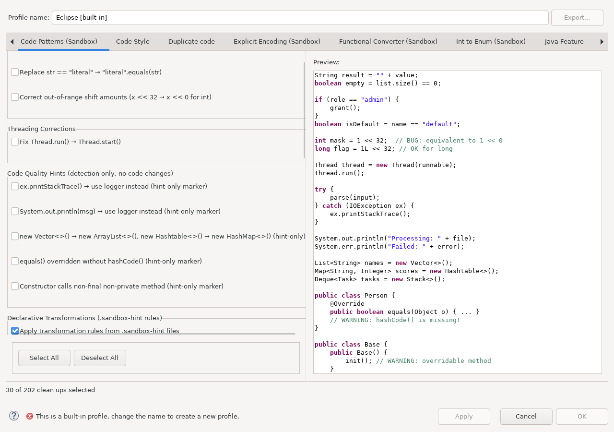

Sandbox TriggerPattern turns recurring source changes into reusable transformations. Rules are stored as .sandbox-hint files and can be authored manually, inferred from examples, or proposed from Git history and current working-tree changes.
This documentation is installed by sandbox_triggerpattern_feature
together with the runtime plug-in. The runtime plug-in does not depend on this Help bundle.
The optional LLM is not a separate execution engine. It is one inference backend shared by several ways of creating TriggerPattern DSL rules:
Git commit history ----> Refactoring Mining -----\
Working tree ----------> Mine Working Tree --------+\
Unified diff ----------> Mine DSL Rule from Diff --+--> LLM Rule Inference --> DSL validation --> .sandbox-hint
Java selection --------> Generate DSL rule (AI) ---/
Rule wizard -----------> Generate with AI --------/
.sandbox-hint
|
+--------------------------+--------------------------+
| |
v v
Hint File Quick Assist Code Patterns Clean Up
one match at the cursor batch/project execution
Inference proposes a generalized rule. Deterministic DSL validation checks whether the generated text is structurally valid; the user must still review whether the proposed transformation is semantically appropriate before broad application.
HEAD is the before-state and the current staged/unstaged Java source is the after-state. See Mining the active project's working tree.Existing built-in and .sandbox-hint rules are executed in batch through Code Patterns (Sandbox) in the JDT cleanup profile. The canonical screenshot is generated with the Hint File cleanup enabled so the preview shows the active/after state.

Project-local hint files are watched as workspace resources. Creating, editing, moving, or deleting a rule invalidates the project rule cache so the current file state is used without restarting Eclipse.
AI-assisted authoring workflows share the Java > LLM Rule Inference preferences. The provider configuration is described in Configuring optional LLM rule inference.
Continue with Workflow guide, Git, working-tree, and diff mining, selection and wizard authoring, local and batch execution, and reference, safety, and limitations.